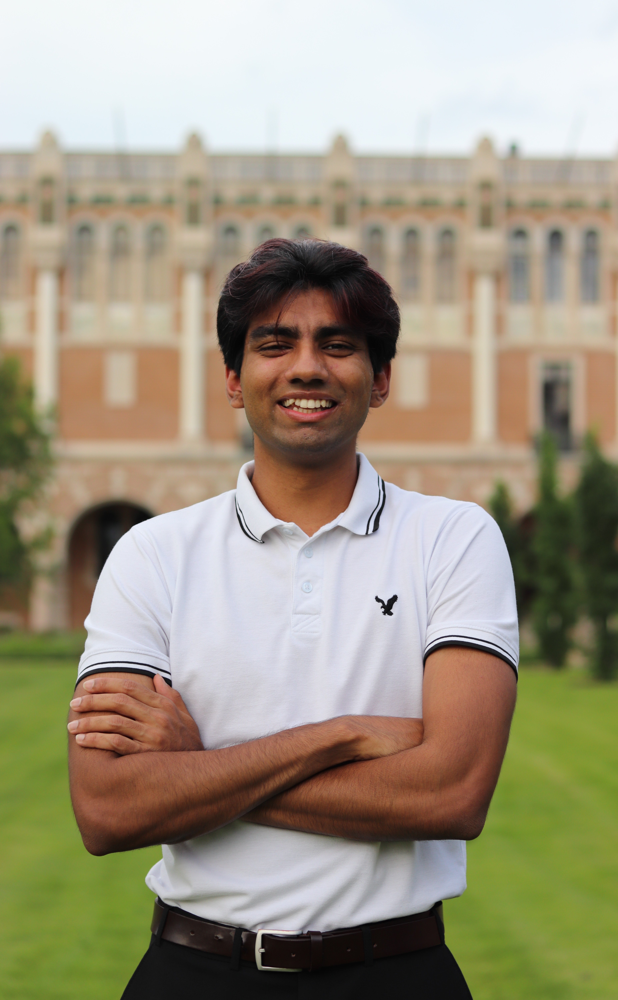

Undergraduate Senior
Department of Computational Applied Mathematics & Operations Research

I am an undergraduate senior at the Department of Computational Applied Mathematics & Operations Research at Rice University. My research interests are in graph problems in discrete optimization and models under competition in online optimization. My prior research work includes a summer research on the Inverse of the Integer Knapsack Problem, a yearlong project on a Shortest Path Problem under Homology Constraints, and a summer REU at the Department of Data Sciences & Operations Management at USC Marshall on Regret Metrics for Decision-Focused Learning.
At Rice, I am also part of the Rice Club Squash Team, Rice INFORMS, and KTRU, Rice's student-led radio station. I am also involved in student government at Baker College, my residential college at Rice. I am originally from Lahore, Pakistan, and I enjoy working out, listening to DJ sets, and trying out matcha shops!